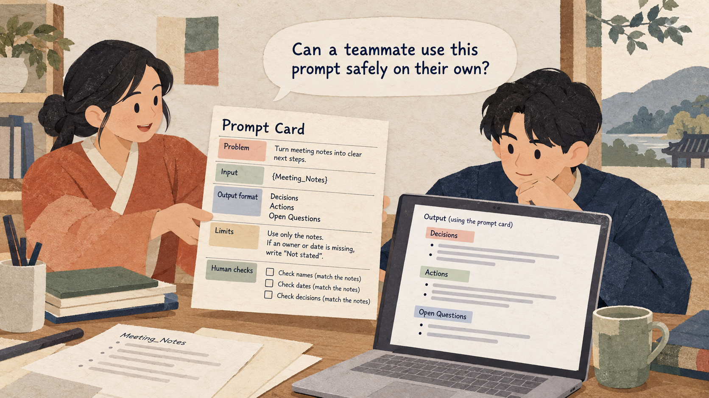

Situation
The problem
A useful prompt buried in a chat is difficult for a teammate to reuse, understand, or check safely.

3 hours: 50-minute lesson, 10-minute break, 50-minute guided practice, 10-minute break, 50-minute applied practice, and 10-minute wrap-up.
A useful prompt buried in a chat is difficult for a teammate to reuse, understand, or check safely.
Document one tested prompt clearly enough that another person can use it and recognize when human review is required.
Practice material: Use the practice material supplied in the session Markdown.
Do not replace missing information with guesses.
A useful prompt buried in a chat is difficult for a teammate to reuse, understand, or check safely.
Work through the explanation before comparing prompts or starting the exercise.
Work through the explanation before comparing prompts or starting the exercise.
These examples come from the current session scenario.
Summarize meetings.
Use AI to assign every task to the most likely person.
Keep the source, task, constraints, and output check visible.
From {Meeting_Notes}, list decisions and actions.
For each action include only a stated owner and date; use "Not stated" when absent.Return sections Decisions, Actions (Task | Owner | Due date), and Open questions. Keep wording faithful to the notes. A human must compare names, dates, and decisions with the source before sharing.
Use the complete case and instructions from the session Markdown.
Use the complete case and instructions from the session Markdown.
Check the output before sharing or acting on it.